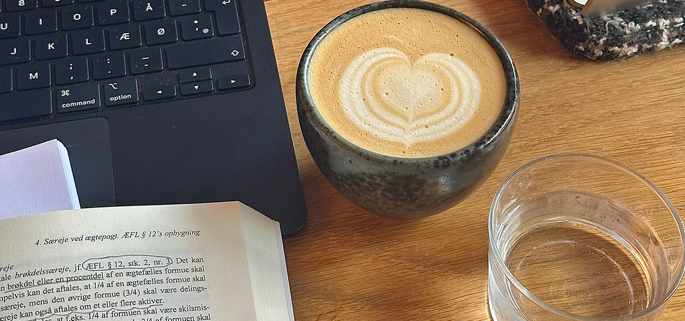

Studievaner i offentlige rum – hvad skal du huske?
At studere på caféer, biblioteker og andre offentlige steder kan være effektivt, men det kræver hensyn til både dig selv og andre. Her er nogle gode vaner at have med:
Tænk over lydniveauet:
- Brug høretelefoner, hvis du skal høre musik eller videoer.
- Hold samtaler dæmpede – især på biblioteker.
- Skal du tage et langt opkald? Gå udenfor, så du ikke forstyrrer andre.
Del pladsen – studieliv er for alle!
- Undgå at sprede dine ting over flere pladser, især i travle perioder.
- Respektér caféers regler – nogle har tidsbegrænsninger for studerende.
Mad og drikke - hvad må du?
- Tjek, om det er tilladt at medbringe egen mad og drikke.
- Hvis du sidder på en café, så køb noget som tak for, at du bruger pladsen.
Brug af faciliteter
- Er der få strømstik? Del med andre, hvis muligt.
- Opryd efter dig selv – efterlad ikke affald eller brugte kaffekopper.
Vær imødekommende
- Smil og vær venlig over for personalet og andre studerende.
- Hvis stedet er fyldt, så overvej at dele et bord, hvis nogen spørger pænt.
Ved at følge disse enkle retningslinjer kan du skabe et godt studiemiljø for både dig selv og andre. God læselyst!